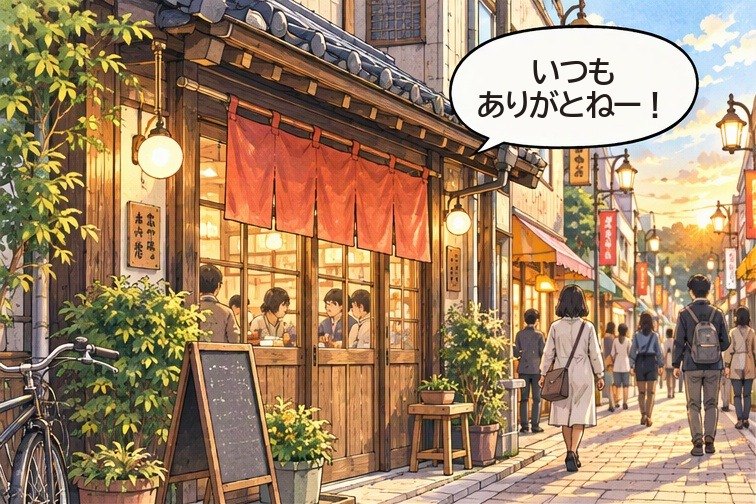

場面 1 学生のころ
「大盛りにしとくね」
お金のなかった学生時代。あのお店は、もうけが少なくても、いつも学割で大盛りにしてくれた。
お店 → お客さまへの「ありがとう」なじみのお店が、これからもずっと、私たちに幸せを届け続けられるように。手数料をぐっと抑えて、お客さまの「ありがとう」がちゃんと届く決済をつくっています。
コンセプトを見る
「ありがとう」の連鎖で、
「行きつけ」の幸せをずっと。
お店が求めるのは利益ばかりじゃない。誰でも一度は、店長の「ありがとう」のサービスを受け取ったことがあるのではないでしょうか？ ありがとPayはその「ありがとう」にお客さまからお返しできる道を作る新しい決済アプリです。
お金のなかった学生時代。あのお店は、もうけが少なくても、いつも学割で大盛りにしてくれた。
お店 → お客さまへの「ありがとう」久しぶりに、のれんをくぐる。お会計で手数料で応援をオンに。手数料は自分が持ち、お店には満額が届く。
お客さま → お店への「ありがとう」のお返し届いた応援と、浮いた手数料が、また次の学生の大盛りになる。ありがとうが、町をめぐっていく。
お店 → 次のお客さまへ※ 物語は、ありがとPay が目指す姿を伝えるための「たとえ」です。
お店のサービスは、お客さまへの「ありがとう」。お客さまの応援とひとことは、お店への「ありがとう」。ありがとPay は、その両方が行き来する通り道になります。手数料が小さいほど、お店の手元に残るぶんが、次のお客さまへのサービスに回ります。
お会計の0.5%。1回の下限は5円、上限は100円です。2万円を超えるお会計でも100円で止まります。
お客さまが払った瞬間に、お店の残高に入ります。銀行口座への出金は、JPYC 社の「JPYC EX」で、お好きなときにできます。
お客さまは支払いの際に手数料で応援でき、「ごちそうさま」などのひとことスタンプを押すこともできます。お店のアプリに、そのまま届きます。
よく見られる料率の一例と比べました。お会計が大きいほど、差が大きくなります。
| お会計 | ありがとPay | コード決済（1.98%の例） | クレジットカード（3.24%の例） |
|---|
応援が無いとして計算します。料率は今のご契約に合わせて変えられます。
カードと比べて、1年で
アプリは2つ。お客さま用の「ありがとPay」と、お店用の「ありがとPay for Business」です。
アプリ「ありがとPay」
指紋・顔・画面ロックで確認してから払います
画面は開発中の見本です
アプリ「ありがとPay for Business」
スタッフの端末は招待コードで追加でき、QR を出す・入金を見るだけにできます。返金はオーナーの端末だけです。
画面は開発中の見本です
手数料で応援は、お客さまの気持ちだけで決まります。
お店からお願いしたり、応援の有り無しでお客さまを分けたりする必要はありません。応援が無くても、手数料は0.5%です。
支払いには、JPYC株式会社（資金移動業者）が発行する、円建ての電子決済手段（ステーブルコイン）「JPYC」を使います。1JPYC＝1円で発行され、1円として円に換えられます。間に入る会社が少ないぶん、手数料を小さくできます。お店のアプリでは、売上も残高も「円」で表示します。
まだ決まっていないことは「検討中」と書いています。
ありがとPay は、出金の手数料をいただきません。出金は JPYC 社の「JPYC EX」で行うため、出金の手数料や1回に出金できる金額は、JPYC 社の決まりに準じます。
JPYC 社の決まりに準じます。JPYC 社の説明では、原則として手続きを受け付けてすぐに処理されます。ただし、不正を防ぐ確認のため、翌営業日までかかることがあります。
お店用のアプリと、出金に使う JPYC EX のアカウント（法人または個人。マイナンバーカードなどでの本人確認があります）、出金先の銀行口座です。お店の登録には、運営の審査を設ける予定です。
正直に言うと、今は普通の決済アプリより一手間多くなります。お客さまは JPYC 社の「JPYC EX」への登録（マイナンバーカードでの本人確認）と、JPYC EX での銀行振込によるチャージが必要です。
この手間を軽くする方法を、JPYC 社と相談しながら検討しています。
全額でも一部でも返金できます。返金はオーナーの端末から行います。返金1回ごとに、手数料の下限分の5円をお店にご負担いただく案です。
JPYC は円建てで、1JPYC＝1円で発行され、1円として円に換えられます（償還）。発行会社の破綻などのリスクについては、JPYC 社の説明書に書かれています。
運営はお金を預からず、鍵も持たない形で設計しています。送金の中継や手数料の受け取り方が法律上どう扱われるかは、提供を始める前に、弁護士と JPYC 社に確認します。
アプリの試作ができ、お客さまとお店のアプリで、支払い・応援・ひとこと・返金が一通り動くところまで来ました。